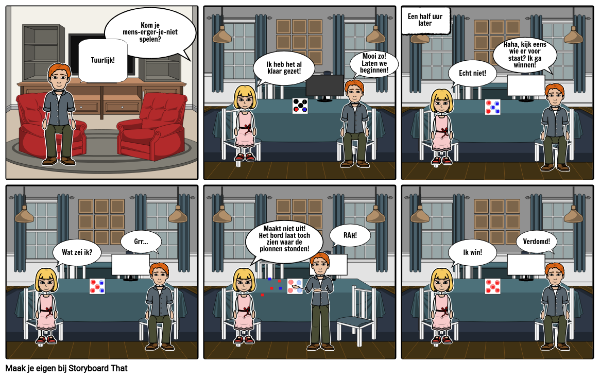
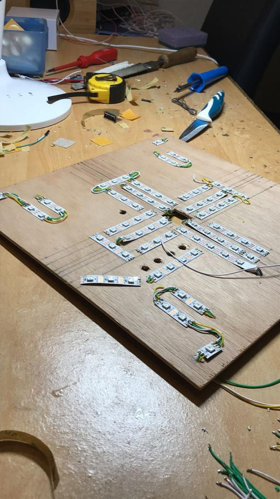

Tijdens de eerste dag proftaak op woensdag in periode 2, zijn wij als groep met verschillende ideeën
gekomen.
Het idee met de meeste stemmen was MensErgerJe Niet. Wij hebben dus besloten om het bordspel mens erger
je niet na te maken
In plaats van het bordspel waren wij van plan om het spel na te maken met behulp van een arduino en
lampjes.
Concept / Idee
Het bordspel: Mens Erger Je Niet, is een spel dat je waarschijnlijk vroeger wel eens hebt gespeeld. het
leuke aan dit spel is dat het 2 tot 4 spelers kan worden gespeeld en het makkelijk te spelen is.
De jeugd van tegenwoordig houdt alleen niet mer zo van deze klassieke bordspellen en houdt zich meer bezig
met social media etc.
Ook biedt ons spel een oplossing tegen spelers die boos worden en alle pionnen op de grond gooien. Door de
lampjes staan de posities van de pionnen opgeslagen.

Om dit leuke bordspel weer leven in te blazen hebben wij een vernieuwde versie gemaakt.
Mens Erger Je Niet wordt veel gespeeld door mensen van alle leeftijden omdat het niet moeilijk te begrijpen
is. Ons
eindproduct is een vernieuwde versie van het spel dat gericht is op famillies waarvan de kinderen zich meer
bezig houden met de wereld om zich heen dan famillie.
Ons prototype wordt een bord met lampjes die de posities van de pionnen voorstellen die
branden wanneer er een pion staat.
Ontwerp
Omdat ons eindproduct geprogrammeerd is op een arduino en op een bord is gemaakt hebben we het bord eerst
moeten maken. Dit is in verschillende fases gebeurd.
Als eerste is het houten bord in vorm gemaakt en zijn de ledstrips erop gemaakt
Vervolgens zijn er knoppen toegevoegd waarmee gedobbeld kan worden en waarmee een pion kan worden
geselecteerd.
Ten slotte is er een display gemonteerd waarop het getal komt te staan wat is gedobbeld.
Nadat alles was gemonteerd is het geheel getest door te kijken of de lampjes en de "dobbelsteen" het deed

Dit is het bord waar alleen de lampjes op zijn gemonteerd
Vervolgens zijn er knoppen toegvoegd
Realiseren
Story board, zie hierboven
Testen
Wij hebben ervoor gekozen om op het bord lampjes te monteren omdat dit aantrekkelijk is en dus aandacht
trekt.
Onze doelgroep is famillies omdat je het spel met 2 tot 4 personen kan spelen en het bordspel wordt ook
voornamelijk met de famillie gespeeld
Het uiteindelijke spel is niet getest door andere maar wel getest op errors. Dat komt omdat het hele spel is
geprogrammeerd in visual studio.
Personen buiten onze groep hebben het product dus niet kunnen testen.
Mens Erger Je Niet is een spel warbij 2 tot 4 spelers om de beurt met 4 pionnen kunnen bewegen over het
bord. Zodra 1 speler met al zijn pionnen het hele bord heeft afgelegd wint deze speler.
Ons product is gebruikersvriendelijk omdat het makkelijk te begrijpen is. Dat komt doordat het simpelweg een
vernieuwde versie is van het al bestaande spel Mens Erger Je Niet. De spelregels zijn dus hetzelfde.